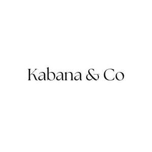

Trade Mark Journal No.2025/041 10 October 2025
UK00004271114 29 September 2025 (18,25,26)

- Class 18
- Bags; Tote bags; Luggage bags; Duffle bags; Duffel bags; Carry-on bags; Toiletry bags; Bags for clothes; Drawstring bags; Carry-all bags; Belt bags and hip bags; Nose bags [feed bags]; Bags (Nose -) [feed bags]; Carrying bags; Grocery tote bags; Cross-body bags; Bags for umbrellas; Diaper bags; Luggage, bags, wallets and other carriers; Crossbody bags; Cloth bags; Bucket bags; Leather bags; Sling bags; Nappy bags; Canvas bags; Shoe bags; Duffel bags for travel; Belt bags; Clutch bags; Wheeled bags; Kit bags; Travel bags; Bags for travel; Souvenir bags; Messenger bags; Garment bags; Leather bags and wallets; Toilet bags; Shoulder bags; Make-up bags; Cosmetic bags; Waterproof bags; Reusable shopping bags; Makeup bags; Umbrella bags; Camping bags; Towelling bags; Courier bags; Bags for campers; Gym bags; Bags for carrying pets; Roll bags; Knitted bags; Hand bags; Travelling bags; Bags [envelopes, pouches] of leather, for packaging; Bags [envelopes, pouches] of leather for packaging; Bags [envelopes, pouches] for packaging of leather; Attaché bags; Cabin bags; Flight bags; Traveling bags; Beach bags; Overnight bags; Bags for climbers; Boot bags; Mesh shopping bags; Mesh bags for shopping; Leather shopping bags; Canvas shopping bags; Bum bags; Hiking bags; Knitting bags; Frames for bags [structural parts of bags]; Suit bags; Wash bags for carrying toiletries; Roller bags; Nose bags; Hunting bags; Baby carrying bags; Gladstone bags; Feed bags; Waist bags; Bags for sports clothing; Holdalls for sports clothing.
- Class 25
- Clothing; Knitwear [clothing]; Jackets [clothing]; Ready-to-wear clothing; Woolen clothing; Furs [clothing]; Layettes [clothing]; Garments for protecting clothing; Clothing layettes; Linen clothing; Headbands for clothing; Headbands [clothing]; Gloves [clothing]; Gloves as clothing; Clothes; Aprons [clothing]; Maternity clothing; Kerchiefs [clothing]; Jerseys [clothing]; Denims [clothing]; Shorts [clothing]; Cashmere clothing; Capes (clothing); Oilskins [clothing]; Gabardines [clothing]; Silk clothing; Leather clothing; Clothing of leather; Leather (Clothing of -); Collars [clothing]; Parts of clothing, footwear and headgear; Knitted clothing; Veils [clothing]; Windproof clothing; Hoods [clothing]; Corsets [clothing, foundation garments]; Embroidered clothing; Wristbands [clothing]; Belts [clothing]; Belts for clothing; Bandeaux [clothing]; Waterproof clothing; Rainproof clothing; Casual clothing; Visors [clothing]; Jackets being sports clothing; Jackets (Stuff -) [clothing]; Stuff jackets [clothing]; Ready-made clothing; Bottoms [clothing]; Playsuits [clothing]; Clothing for leisure wear; Latex clothing; Trunks being clothing; Infant clothing; Woven clothing; Clothing for sports; Sports clothing; Ties [clothing]; Leisure clothing; Drawers [clothing]; Drawers as clothing; Athletic clothing; Clothing for children; Muffs [clothing]; Clothing for babies; Bodies [clothing]; Tops [clothing]; Clothing for infants; Weatherproof clothing; Clothing for cycling; Water-resistant clothing; Fabric belts [clothing]; Pockets for clothing; Triathlon clothing; Handwarmers [clothing]; Clothing for skiing; Beach clothing; Thermal clothing; Chaps (clothing); Cowls [clothing]; Men's clothing; Fishing clothing; Braces for clothing; Mitts [clothing]; Dance clothing; Shoes; Insoles [for shoes and boots]; Insoles for shoes and boots; High-heeled shoes; Wooden shoes [footwear]; Dress shoes; Sneakers [footwear]; Slip-on shoes; Leather shoes; Tongues for shoes and boots; Tennis shoes; Jogging shoes; Ballet shoes; Esparto shoes or sandals; Walking shoes; Rubber shoes; Shoes soles for repair; Hiking shoes; Pullstraps for shoes and boots; Athletic shoes; Esparto shoes or sandles; Basketball shoes; Running shoes; Volleyball shoes; Soccer shoes; Sandals and beach shoes; Waterproof shoes; Sneakers; Shoe soles; Heel pieces for shoes; Dance shoes; Snowboard shoes; Canvas shoes; Wooden shoes; Shoes for foot volleyball; Foot volleyball shoes; Cycling shoes; Sports shoes; Shoes for leisurewear; Platform shoes; Golf shoes; Footwear soles; Soles for footwear; Sport shoes; Athletics shoes; Yoga shoes; Hockey shoes; Mountaineering shoes; Baby shoes; Roller shoes; Bowling shoes; Riding shoes; Insoles for footwear; Football shoes; Baseball shoes; Gymnastic shoes; Rain shoes; Aqua shoes; Training shoes; Boxing shoes; Handball shoes; Fittings of metal for boots and shoes; Skiing shoes; Beach shoes; Flat shoes; Shoes for casual wear; Nursing shoes; Leisure shoes; Shoes for infants; Stiffeners for shoes; Rugby shoes; Heel protectors for shoes; Women's shoes; Footwear; Work shoes; Tap shoes; Flip-flops for use as footwear; Hidden heel shoes; Apres-ski shoes; Deck shoes; Driving shoes; Pumps [footwear]; Infants' shoes; Shoe soles for repair; Sandals; Studs for football shoes; Spiked running shoes; Anglers' shoes; Cleats for attachment to sports shoes; Boots; Trainers [footwear]; Shoe straps; Inner socks for footwear; Protective metal members for shoes and boots; Rubbers [footwear]; Wedge sneakers; Shoe uppers; Basketball sneakers; Knitted baby shoes; Swimwear; Beachwear; Swimsuits; Bikinis; Tankinis; Monokinis; Lingerie; Maternity lingerie; Beach footwear; Shapewear; Maillots [hosiery]; One-piece playsuits; Sportswear; Maternity underwear; Boardshorts; Men's underwear; Gymwear; Surfwear; Bodices [lingerie]; Beach clothes; Underwear; Undergarments; Underwear for women; Maternity sleepwear; Sweat-absorbent underclothing [underwear]; Swim briefs; Swim shorts; Anti-sweat underwear; Strapless bras; Underwear (Anti-sweat -); Briefs [underwear]; Fitted swimming costumes with bra cups; Trunks [underwear]; Jockstraps [underwear]; Loungewear; Sweat-absorbent underwear; Gussets for underwear [parts of clothing]; Sports garments; Bra straps [parts of clothing]; Beach cover-ups; Maternity shorts; Bathing costumes for women; Maillots; Menswear; Maternity dresses; Bras; Gussets for bathing suits [parts of clothing]; Thong sandals; Bodysuits; Sleepwear; Knitted underwear; One-piece clothing for infants and toddlers; Jogging bottoms [clothing]; Boas [clothing]; Bralettes; Clothing for gymnastics; Tennis dresses; Strapless brassieres; Kaftans; Bathing suit cover-ups; Teddies [undergarments]; Swimming costumes; Boy shorts [underwear]; Disposable underwear; Sports bras; Nightwear; Bathing costumes; Swim trunks; Nappy pants [clothing]; Footwear for women; Casualwear; Moisture-wicking sports bras; Knitwear; Pyjamas; Pajamas; Pyjamas [from tricot only]; Baby doll pyjamas; Nightdresses; Trousers; Bed socks; Nighties; Underpants; Nightshirts; Nightgowns; Leggings [trousers]; Trousers shorts; Housecoats; Corduroy trousers; Sweatpants; Teddies [underclothing]; Sleep shirts; Sleep pants; Pajamas (Am.); Trousers for children; Bed jackets; Underpants for babies; Tracksuits; Tracksuit bottoms; Pajama bottoms; Slippers; Pinafore dresses; Lounging robes; Woollen socks; Knickers; Underclothes; Teddies; Bootees (woollen baby shoes); Tracksuit tops; Dungarees; Trousers for sweating; Bath slippers; Woollen tights; Waterproof trousers; Men's dress socks; Lounge pants; Trouser socks; Sleepsuits; Fleece shorts; Sleeping garments; Babies' pants [underwear]; Corduroy shirts; Negligees; Dress pants; Dresses for evening wear; Corduroy pants; Pinafores; Dress shirts; Short-sleeved shirts; Night shirts; Short-sleeved T-shirts; Long-sleeved shirts; Cardigans; Socks and stockings; Turtleneck shirts; Open-necked shirts; Maternity pants; Casual trousers; Golf trousers; Slipper socks; Hooded bathrobes; Baby clothes; Nightcaps; Waistcoats; Trousers of leather; Undershirts for kimonos (juban); Thermal underwear; Maternity shirts; Evening dresses; Baby pants; Rain trousers; Disposable slippers; Nurse pants; Maternity leggings; Bib shorts; Socks; Footless socks; Knit shirts; Pram suits; Anti-perspirant socks; Sweat-absorbent socks; Jogging pants; Sweatsuits; Hooded sweat shirts; Hooded sweatshirts; Gym shorts; Hooded pullovers; Jogging bottoms; Warm-up pants; Jogging outfits; Sleeveless jackets; Snowboard trousers; Rugby shirts; Sleeveless jerseys; Chino pants; Men's and women's jackets, coats, trousers, vests; Sweatshorts; Ski trousers; Camouflage pants; Sport shirts; Jogging suits; Turtleneck pullovers; Gym suits; Leisurewear; Rugby shorts; Pants; Collared shirts; Leather pants; Shirts for suits; Gym boots; Sleeved jackets; Sports pants; Sleeveless pullovers; Hooded tops; Blue jeans; Bib tights; Denim pants; Mock turtleneck shirts; Capri pants; Tennis shirts; Camouflage shirts; Hoodies; Jogging tops; Jumper suits; Sweatshirts; Boxer shorts; Leotards; Cagoules; Short-sleeve shirts; Soccer shirts; Blouson jackets; Boxing shorts; Football shirts; Sweat pants; Clothes for sport; Salopettes; Windcheaters; Jogging sets [clothing]; Warm-up jackets; Shirts; Turtleneck tops; Suede jackets; Tank-tops; Moisture-wicking sports pants; Sweat shirts; Tennis shorts; Vest tops; Cycling pants; Tennis pullovers; Jeans; Denim jackets; American football pants; Padded jackets; Rugby tops; Men's socks; Baselayer bottoms; Plimsolls; Ski pants; Quilted jackets [clothing]; Riding trousers; Casual shirts; Exercise wear; Tennis wear; Sports wear; Leisure wear; Ski wear; Ladies wear; Maternity wear; Headgear for wear; Casual wear; Surf wear; Evening wear; Head wear; Clothing for wear in judo practices; Clothing for wear in wrestling games; Swim wear for children; Bridesmaids wear; Formal wear; Rain wear; Sashes for wear; Swim wear for gentlemen and ladies; Formal evening wear; Infant wear; Breeches for wear; Children's wear; Face masks [fashion wear] ; Clothes for sports; Padded shirts for athletic use; Padded pants for athletic use; Sports clothing [other than golf gloves]; Padded shorts for athletic use; Yoga shirts; Paper hats for wear by nurses; Yoga pants; Golf clothing, other than gloves; Work clothes; Athletic uniforms; Paper hats for wear by chefs; Athletic tights; Sports shirts; Moisture-wicking sports shirts; Anklets [socks]; Toe socks; Ankle socks; Non-slip socks; Thermal socks; Yoga socks; Tennis socks; Socks for men; Sports socks; Water socks; Pop socks; Sock suspenders; American football socks; Japanese style socks (tabi); Knee-high stockings; Knitted gloves; Legwarmers; Mittens; Stockings; Sweaters; Tights; Beanie hats; Lace boots; Waterproof pants; Slipper soles; Ankle boots; Jumpers [sweaters]; Leather slippers; Knee warmers [clothing]; Knitted tops; Knit jackets; Footless tights; Fingerless gloves as clothing.
- Class 26
- Zippers for bags; Buckles for bags; Clasps for bags; Laces for shoes; Laces for footwear; Shoe laces.
Mia Andrews